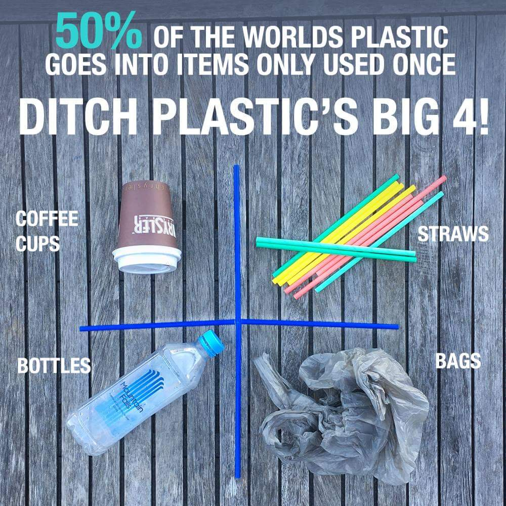

"Only when the last tree is cut down, the last fish eaten and the last stream poisoned, you will realize that you cannot eat money."
Home
Did you know?
The plastic film around the middle of the majority of take away cups means they cannot be recycled. That means in Ireland alone 2 million disposable cups are sent to our landfills every day.
Click here to find out more about Zero Waste and how you can help
Did you see?
Ireland is the top producer of plastic wate in the EU ahead of countries such as Luxembourg, Portugal and Germany. We produce approximately 61kg of plastic waste per inhabitant. Shocking!
To read the full article click here.
Did you hear?
Ireland is heading towards a plastic waste CRISIS! China, who took 95% of Irelands plastic waste recently put a ban on imported waste from European countries beginning in January 2018.
Click here to read more about this crisis!
Contact Us: +353 23746474
Zero Waste Dublin Offices, Blanchardstown Road North, Dublin 15,D15 YV78
Copyright ©Michael McMahon.
Follow us on: